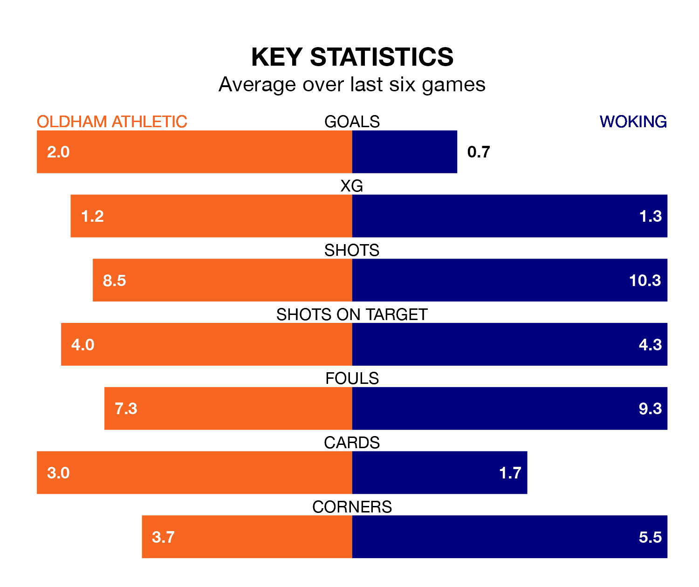

Oldham Athletic host Woking at Boundary Park on Saturday on the back of four consecutive wins in National League.
Oldham have picked up 15 points from their last six games, and they face a Cardinals side who have lost their last three matches, and collected five points from the last possible 18.
Woking are 21st in the table after 28 games, of which they have won seven and drawn six, earning 27 points.
Oldham are 16 places ahead of the Cardinals in fifth, with 12 wins and nine draws putting them on 45 points.
With 28 goals in 28 games so far this season, the visitors are the league's joint-third-lowest scorers with 1.0 goals per game. But they are conceding fewer than average too, letting in 38 goals at a rate of 1.4 per game.
Athletic, meanwhile, are above average scorers, with 1.6 goals per game, compared to a league average of 1.5. They have conceded 1.4 goals per game.
In the last three years, Oldham and Woking have played each other on three occasions. Oldham won two of them and Woking one.
Their last meeting was on November 18, when Oldham won 1-0 away.
Oldham's last match was on Tuesday, a 2-0 win against Barnet, with James Norwood getting the goals for the Latics.
Woking lost 1-0 against Chesterfield last time out, also on Tuesday.
Updated: 09:07 (UTC), 24/01/24